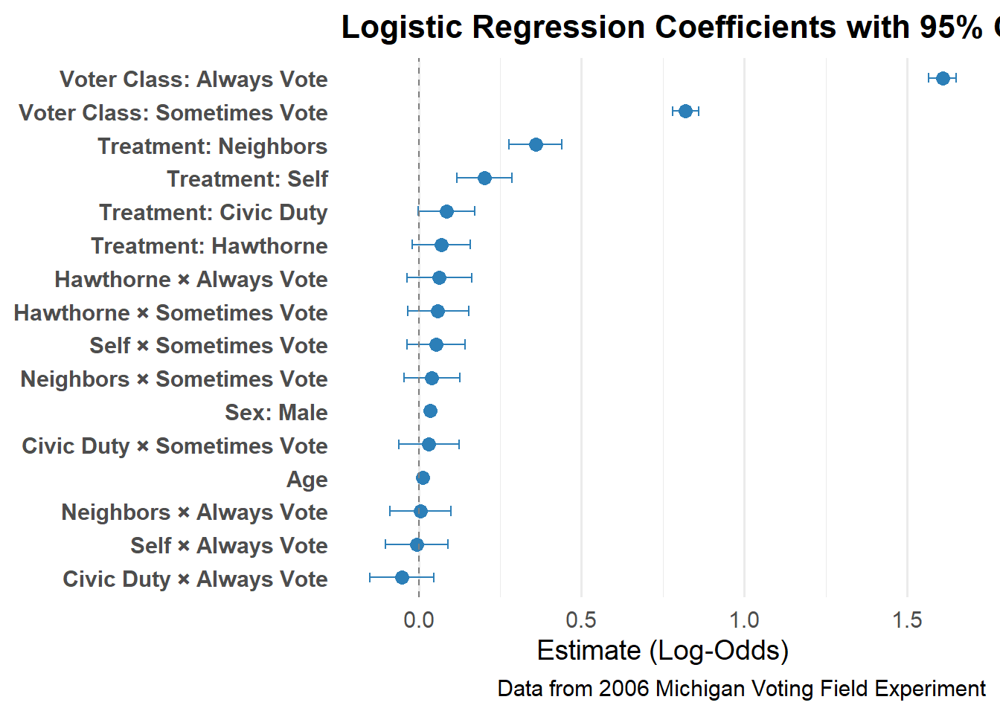

| Logistic Regression Coefficients | ||||
|---|---|---|---|---|
| Predicting Voting in 2006 Primary | ||||
| Term | Estimate | Std. Error | Z-Value | P-Value |
| Intercept | −2.434 | 0.022 | −110.810 | 0.000 |
| Age | 0.012 | 0.000 | 42.160 | 0.000 |
| Sex: Male | 0.036 | 0.008 | 4.700 | 0.000 |
| Treatment: Civic Duty | 0.086 | 0.044 | 1.940 | 0.053 |
| Treatment: Hawthorne | 0.071 | 0.045 | 1.560 | 0.118 |
| Treatment: Self | 0.202 | 0.043 | 4.700 | 0.000 |
| Treatment: Neighbors | 0.359 | 0.042 | 8.620 | 0.000 |
| Voter Class: Sometimes Vote | 0.820 | 0.020 | 40.290 | 0.000 |
| Voter Class: Always Vote | 1.609 | 0.022 | 74.630 | 0.000 |
| Civic Duty × Sometimes Vote | 0.031 | 0.047 | 0.650 | 0.513 |
| Hawthorne × Sometimes Vote | 0.059 | 0.048 | 1.230 | 0.218 |
| Self × Sometimes Vote | 0.053 | 0.046 | 1.160 | 0.244 |
| Neighbors × Sometimes Vote | 0.041 | 0.044 | 0.920 | 0.359 |
| Civic Duty × Always Vote | −0.051 | 0.050 | −1.020 | 0.307 |
| Hawthorne × Always Vote | 0.063 | 0.051 | 1.230 | 0.218 |
| Self × Always Vote | −0.006 | 0.049 | −0.120 | 0.906 |
| Neighbors × Always Vote | 0.006 | 0.048 | 0.130 | 0.896 |
Voting and Postcards
# A tibble: 17 × 10
term estimate std.error statistic p.value Term Estimate `Std. Error`
<chr> <dbl> <dbl> <dbl> <dbl> <chr> <dbl> <dbl>
1 (Intercept) -2.43 0.0220 -111. 0 Inte… -2.43 0.022
2 age 0.0121 0.000287 42.2 0 Age 0.012 0
3 sexMale 0.0356 0.00757 4.70 2.60e- 6 Sex:… 0.036 0.008
4 treatmentC… 0.0861 0.0444 1.94 5.27e- 2 Trea… 0.086 0.044
5 treatmentH… 0.0707 0.0453 1.56 1.18e- 1 Trea… 0.071 0.045
6 treatmentS… 0.202 0.0430 4.70 2.56e- 6 Trea… 0.202 0.043
7 treatmentN… 0.359 0.0416 8.62 6.86e-18 Trea… 0.359 0.042
8 voter_clas… 0.820 0.0203 40.3 0 Vote… 0.82 0.02
9 voter_clas… 1.61 0.0216 74.6 0 Vote… 1.61 0.022
10 treatmentC… 0.0308 0.0471 0.654 5.13e- 1 Civi… 0.031 0.047
11 treatmentH… 0.0589 0.0478 1.23 2.18e- 1 Hawt… 0.059 0.048
12 treatmentS… 0.0532 0.0457 1.16 2.44e- 1 Self… 0.053 0.046
13 treatmentN… 0.0406 0.0442 0.917 3.59e- 1 Neig… 0.041 0.044
14 treatmentC… -0.0513 0.0502 -1.02 3.07e- 1 Civi… -0.051 0.05
15 treatmentH… 0.0627 0.0509 1.23 2.18e- 1 Hawt… 0.063 0.051
16 treatmentS… -0.00578 0.0489 -0.118 9.06e- 1 Self… -0.006 0.049
17 treatmentN… 0.00627 0.0478 0.131 8.96e- 1 Neig… 0.006 0.048
# ℹ 2 more variables: `Z-Value` <dbl>, `P-Value` <dbl>
US campaigns include sending postcards to registered voters. For this analysis, we use data from a 2006 field experiment in Michigan to determine how to increase voter participation in Texas’s elections. However, we recognize that Michigan may differ from Texas and the broader US. One weakness of this model is that it doesn’t represent the overall US population because the data is only taken from Michigan. We model the outcome variable—whether someone voted— as a binary, and the model estimates how predictor variables influence the log-odds of voting. While the results indicate strong effects, our estimates rest on assumptions—most notably, that the Michigan sample is representative and that the model is correctly specified. Real-world outcomes in Texas may differ, and actual effects could be smaller if these assumptions do not hold.